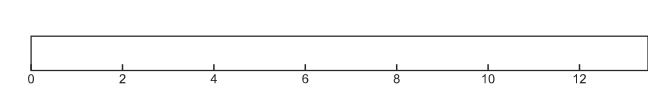
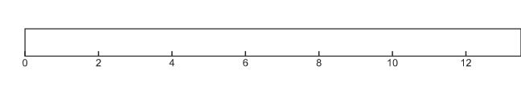

RESULTADOS
concentrado de resultados y datos generales

La metodología fue repetida 9 veces en diferentes sedes con participantes de diferente perfil y campo de trabajo, comprendiendo cada taller de 6 horas aproximadamente atendiendo en promedio de 30 a 40 asistentes por sede.
NUMERALIA GENERAL
| LOCALIDAD | SEDE | PERFIL ASISTENTES | ASISTENTES | PROPUESTAS |
|---|---|---|---|---|
| Progreso | Instituto Tecnológico Superior de Progreso | Estudiantes de ingeniería en Gestión Empresarial | 30 | 6 |
| Maxcanú | Instituto Tecnológico del Poniente | Estudiantes de técnico superior en Administración | 30 | 6 |
| Izamal | Universidad Tecnológico del Centro | Estudiantes de técnico superior en Turismo | 34 | 6 |
| Tizimín | Universidad Tecnológico del Centro | Estudiantes de Ingeniería en Agronomía, Informática, Gestión Empresarial y Licenciatura en Administración | 36 | 6 |
| Valladolid | Instituto Tecnológico Superior de Valladolid | Profesores de Ingenierías en Sistemas, Ambiental, TICS y licenciaturas en Economía y Administración. | 17 | 2 |
| Tekax | Universidad Tecnológica regional del Sur | Estudiantes de TICS,Mecatrónica ,Turismo ,Mercadotecnia Emprendedores en Turismo,Chile habanero,Miel de abeja melipona,Tejido artesanal | 26 | 5 |
| Ticul | CETIS #19 | Estudiantes de Técnico superior en Contabilidad | 17 | 2 |
| Mérida | Instituto Yucateco del Emprendedor | Emprendedores en general y representantes de instituciones locales. | 21 | 3 |
| Motul | CBTIS No. 80 | Estudiantes de programación, pequeños comerciantes y miembros del H.Ayuntamiento. | 34 | 4 |
| 262 | 44 | |||
ETAPA 1 - INSPIRACIÓN
Identificación y jerarquización de ejes sectoriales por medio de porcentaje (%) de repetición en los participantes.
 

ETAPA 2 - IDEACIÓN
Ejes sectoriales y desafíos por cada eje con conexiones.